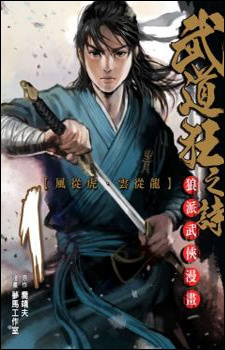

<section id="content">
	<div id="container">
		<div class="manga-new">
		
		<p class="manga-title">Blood and Steel</p>
		<p class="manga-genre"><span class="genre">Genre:</span> Fantasy, Drama, Martial Art</p>
		<p class="manga-description"><span class="description">Description:</span> <span class="details">The story begins with an eradication of Qingcheng by a group of martial art fanatic from Wudong, whose master and disciples only has one belief - to become the strongest. In order to maintain the supremacy, it takes over all the other martial arts group and kill those refuse to yield themselves to it.
		<br /> <br />
		Yan Heng, a young swordman in Qingcheng, was saved by 'Wudang Hunter' Jing Lie, who also lost his fellows because of Wudong. Being the only remnant of their groups, the two allied and start their journey of revenge.</span> </p>
	</div>

	<div class="manga-new">
		
		<p class="manga-title">Song of the Long March</p>
		<p class="manga-genre"><span class="genre">Genre:</span>Action, Adventure, Drama, Historical </p>
		<p class="manga-description"><span class="description">Description:</span> <span class="details">Chang An in the Tang Dynasty of China (618–907): The demon star is passing through the sky, calamity is about to befall the Tang Dynasty.
		<br /><br />
		Princess Yongning is forced to flee the castle after her family is killed. Because she is young, she is able to pass for a boy and becomes renowned as a great military strategist. On her journey, she makes trusted allies with her skills as well as fearsome enemies while aiming to protect the Tang Dynasty and exact revenge.</span> </p>
		</div>
	</div>
</section>
	